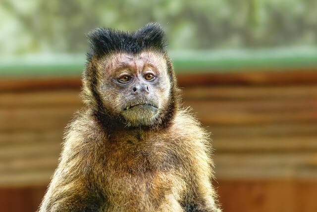

-
Birds
Puffin
The Atlantic puffin, also known as the common puffin, is a species of seabird in the auk family. It is the only puffin native to the Atlantic Ocean; two related species, the tufted puffin and the horned puffin are found in the northeastern Pacific.
-

felines
Tiger
The tiger is the largest living cat species and a member of the genus Panthera. It is most recognisable for its black stripes on orange fur with a white underside. An apex predator, it primarily preys on ungulates, such as deer and wild boar.
-

Reptiles
Lizard
Lizard is the common name used for all squamate reptiles other than snakes, encompassing over 7,000 species, ranging across all continents except Antarctica, as well as most oceanic island chains. The grouping is paraphyletic as some lizards are more closely related to snakes than they are to other lizards.
-

Amphibian
Frog
A frog is any member of a diverse and largely carnivorous group of short-bodied, tailless amphibians composing the order Anura.
-

Mammalia
Grizzly Bear
The grizzly bear, also known as the North American brown bear or simply grizzly, is a population or subspecies of the brown bear inhabiting North America. In addition to the mainland grizzly, other morphological forms of brown bear in North America are sometimes identified as grizzly bears.
-

Birds
Crane
Cranes are a type of large bird with long legs and necks in the biological family Gruidae of the order Gruiformes. The family has 15 species placed in four genera which are Antigone, Balearica, Leucogeranus, and Grus.
-

Mammalia
Red Panda
The red panda, also known as the lesser panda, is a small mammal native to the eastern Himalayas and southwestern China. It has dense reddish-brown fur with a black belly and legs, white-lined ears, a mostly white muzzle and a ringed tail.
-

Mammalia
Giraffe
The giraffe is a large African hoofed mammal belonging to the genus Giraffa. It is the tallest living terrestrial animal and the largest ruminant on Earth. Traditionally, giraffes have been thought of as one species, Giraffa camelopardalis, with nine subspecies.
-

Primates
Monkey
Monkey is a common name that may refer to most mammals of the infraorder Simiiformes, also known as the simians.